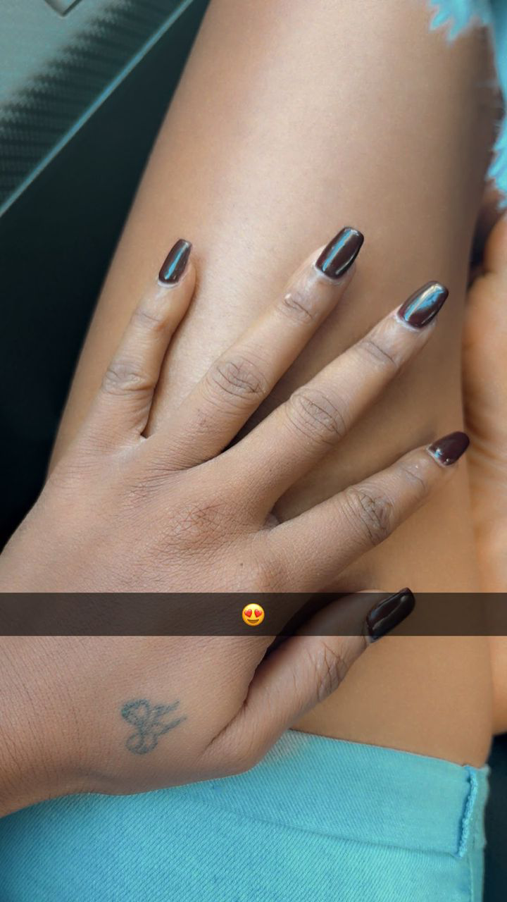
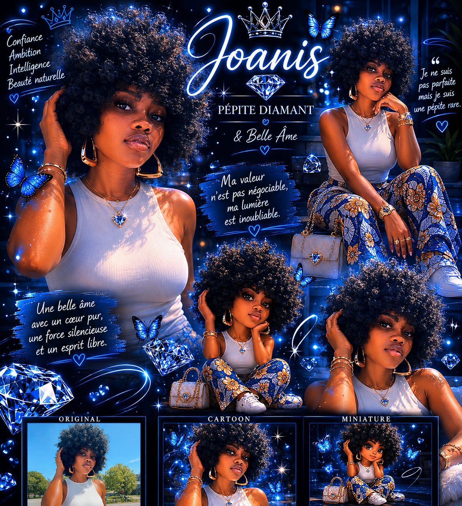

Le type de femme qu'est ROSE
Elle est une femme exceptionnelle, dotée d'une intelligence brillante et d'une compassion profonde. Sa présence illumine chaque pièce qu'elle pénètre, et son sourire contagieux réchauffe les cœurs de tous ceux qui la rencontrent. Elle te pousse toujours à t'améliorer afin de devenir la meilleure version de toi-même , grâce à sa détermination inébranlable et à sa capacité à surmonter les défis avec grâce. Sa gentillesse et son empathie font d'elle une amie précieuse et le genre de partenaire de vie qu'on voudrait avoir, toujours prête à écouter si besoin. En plus d'être la femme idéale,elle a ce côté sauvage qui lui rajoute un plus.Je vous en dis davantage sur elle dans les paragraphes suivants.
En effet lorsque je l'ai rencontrée, je ne m'attendais pas à ce qu'elle me change de mon quotidien de solitaire. Plus je la cotoyais plus je m'habituais à sa présence, à sa manière de faire, de penser, de s'emporter et d'élever la voix(cela montre clairement comme elle est sincère).C'est vrai qu'elle donne l'impression d'être insensible et sans cœur mais c'est une Femme exceptionnelle.
Son empathie
Elle a une capacité incroyable à comprendre les émotions des autres et à se mettre à leur place. Son empathie lui permet de créer des liens profonds avec les gens, et elle est toujours prête à offrir son soutien et son réconfort à ceux qui en ont besoin. Sa compassion est un trait qui la rend encore plus exceptionnelle, car elle ne juge jamais les autres et cherche toujours à les aider de la meilleure façon possible et à les pousser au meilleur sans hésiter.
Sa bienveillance
ROSE est une personne d'une grande bienveillance. Elle a un cœur généreux et est toujours prête à aider les autres, que ce soit par de petits gestes ou de grandes actions. Sa bienveillance se manifeste dans sa façon de traiter les gens avec respect et gentillesse, et elle inspire les autres à faire de même. Elle est un véritable rayon de soleil dans la vie de ceux qui ont la chance de la connaître.Son regard et son sourire sont l'une des plus belles choses que j'ai eu à voir
Sa détermination
Elle ne recule jamais devant les défis et est toujours prête à se battre pour ce en quoi et en qui elle croit. Si elle est bloquée par une chose, elle cogite(elle est mignonne quand elle s'y met) jusqu'à trouver une solution. Elle est un exemple inspirant qui montre que rien n'est impossible lorsque l'on a la volonté de réussir.
Son côté sauvage
ROSE a aussi un côté sauvage qui la rend encore plus fascinante. Elle n'a pas peur de sortir de sa zone de confort pour découvrir de nouvelles expériences. Son esprit libre et son amour de la vie font d'elle une personne passionnante à côtoyer. Elle te traite comme tu la traites surtout quand tu lui manques de respect ou lui marche dessus. Elle ne va pas te rater tellement elle aime insulter MDR et elle n'a pas bon frein. Je me demande comment on peut avoir tant de sauvagerie dans un si petit corps mais elle est tellement belle et sexy. Ses gestes plus simple ont une sorte de grain de sauvagerie. c'est ma tite sauvageonne à moi.
Sa façon d'aimer
Pour en savoir plusCliquez ici
Ses jolis petits doigts

Voyez comme ses doigts sont jolis!Sans oublier lze teint et la douceur de sa peau au toucher.Le vernis noir lui va à merveille.
Elle m'a poussé à devenir meilleur et grâce à sa détermination et à sa capacité à surmonter les défis avec grâce, j'ai commencé à apprendre l'utilisation de l'IA et aussi la création de page Web. Ainsi je lui ai dédiée cette page. Je l'aime tellement! J'ai pu lui faire une image à l'aide de l'IA; ce qui montre le diamant qu'elle esr. Je vous le montre dans les lignes à suivre.

Elle a ce truc qui la rend tellement attractive, unique et passionnante à mes yeux!
Son magnifique sourire et son regard
Elle a un sourire qui illumine la pièce et un regard qui dit tout sans dire un mot. C'est ce qui rend chaque moment passé avec elle si spécial et inoubliable.Son regard est si perçant qu'il semble lire dans les pensées et il me fait fondre littéralement.Je vous montre un aperçu de son joli sourire.

Admirez son magnifique sourire!Qui me fait perdre mes moyens.
Son regard est aussi très expressif et charmeur. Voyez vous même!
Il me donne l'impression qu'elle me lit dans les yeux et que je suis perdu dans ses profondeurs un peu comme quelq'un qui se noie ou qui se fait aspirer mais c'est si agréable que je me laisse faire. Ce n'est pas comme si je pourrais résister.Que voulez-vous je suis déjà accros à elle.
Il y a une chanson de Joé qui me fait penser à elle;je vous mets le lien pour l'écouter!
Quand je parle de ce que j'aime chez elle
Il y a bons nombres de choses
- Sa beauté naturelle,
- Sa personnalité unique et captivante,
- Sa capacité à me faire sentir spécial et aimé,
- Sa passion pour la vie et sa détermination à réussir,
- Son sens de l'humour qui me fait rire même dans les moments difficiles,
- Sa gentillesse et sa compassion envers les autres,
- Sa capacité à me soutenir et à m'encourager dans tout ce que je fais,
- sa manière de me montrer et me dire que je lui appartiens
- sa façon de me désirer
Pourquoi je l'aime tant?
Je mentirais si je disais que j'ai une réponse claire à cette question. Elle est simplement extraordinaire, je tombe chaque jour pour elle un peu plus pour des choses anodines:son sourire narquois quand elle me taquine, les mouvements de sa bouche quand elle parle surtout la transition quand en parlant, elle se met à sourire ou éclate de rire; sa façon de bouder, de dormir comme un bébé! Sans parler de ses jolis seins! Oh que j'aime ses seins, son joli fessier vous n'avez pas idée et sans oublier sa pussy! Je salive à penser comment je vais la lui croquer littéralement! .